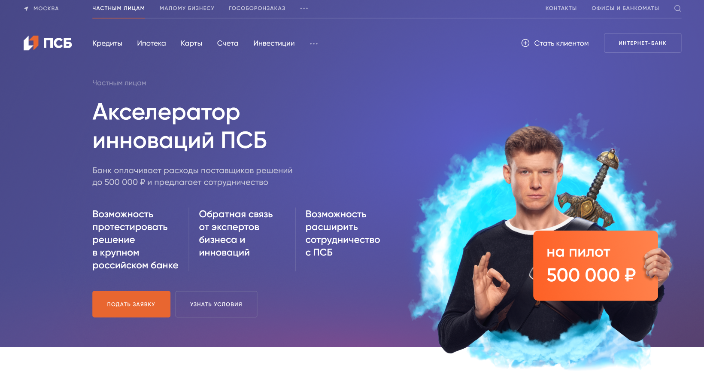
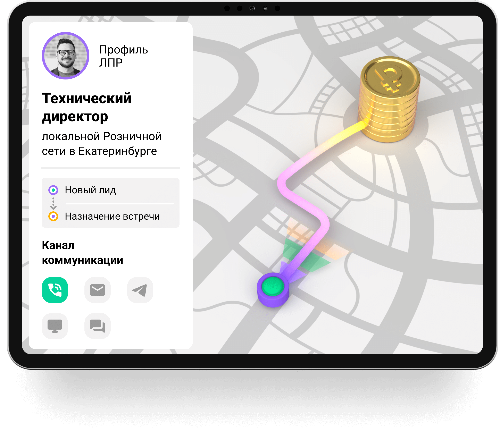

28 пилотов в конвейере, 208 решений в базе и новая среда CDS — так Акселератор трансформирует процессы банка через ИИ
Команда маркетинга подготовила макет посадочной страницы «Акселератор инноваций ПСБ» на сайте банка — теперь любая компания может подать заявку на пилот напрямую, без входящих писем и нетворкинга.
На странице закрыт весь путь заявителя: критерии отбора, 12 приоритетных категорий решений, пять этапов пилота и форма заявки с FAQ.


Завершён пилот Selvery — приложения, которое в моменте общения с клиентом подсказывает менеджеру, что сказать, показать или отправить, и автоматически логирует все действия для контроля.
Заключить договор на постоянное использование Selvery в контуре банка — внедрить стандарты продаж и обеспечить прозрачный контроль их исполнения.
Концепция строится на трансформации неэффективных процессов, а также на создании новых направлений, релевантных актуальным вызовам.
Каждое направление получает статус, ответственного и дедлайн — концепция управляется как единый портфель проектов, а не набор разрозненных инициатив
Цель — автоматизировать устаревший ручной процесс насмотренности и закрыть отставание в скорости пополнения базы решений. Монитор реестров ПО уже ежесуточно опрашивает каталог АРПП и сайты правообладателей, обогащает описания и раскладывает решения по подразделениям банка.
В очереди: 273 записи не привязаны к подразделению, ещё 403 — низкая уверенность отбора или мёртвый сайт. Реестр пополняется пакетами, не потоком — примерно на 200 решений в месяц
Зеркалирование тестового стенда платформы ИИ:
Зачем: тестовый стенд должен максимально повторять конфигурацию целевой платформы:
Зачем: для повышения скорости прототипирования решений для тестирования гипотез и сокращения затрат, при более эффективном процессе оплаты пилота
Договорённость с Ньютоном о постоянной рубрике на главной странице
Среда CDS — синергия с Центром ИИ: готовим Chief Data Scientists, способных сразу работать на целевой платформе банка.
Трансформация банка начинается с людей: CDS разных уровней подготовки (hard и soft skills) приходят к единому стандарту через смену мышления и практику в инфраструктуре Акселератора, релевантной стеку целевой платформы.
Акцент: это не набор курсов, а смена мышления плюс практика в нашей инфраструктуре — CDS, прошедший обучение у нас, сразу готов к боевой системе
В глазах Центра ИИ CDS — ИТ-бизнес-партнёр на стыке бизнеса, ИИ и управления продуктом: понимает архитектуру платформы, умеет формулировать и тестировать гипотезы.
Рабочая встреча команды 26 августа — собрали черновую структуру программы и предварительные сроки, готовимся показать их Антону Стасенку (руководителю Центра ИИ)
На неделе: дорожная карта и проект-схема программы
Обновить Методические указания прошлого года, перевыпустив документ на основе разработанного ВНД.
За неделю: 20 млн ₽ ФОТ передано в экономию